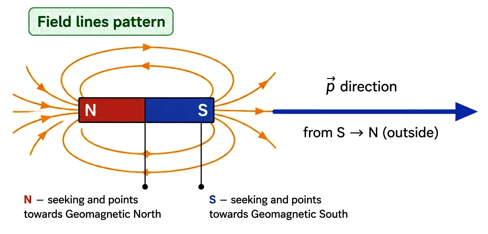
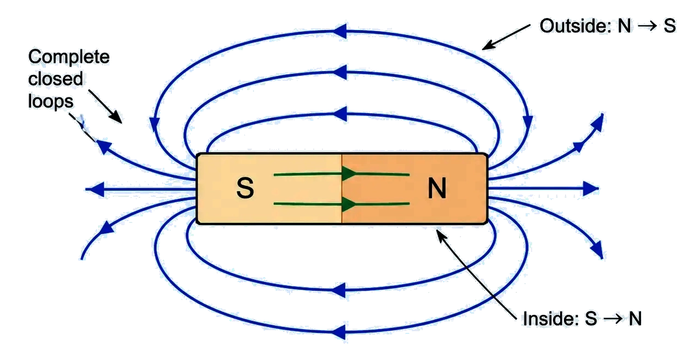
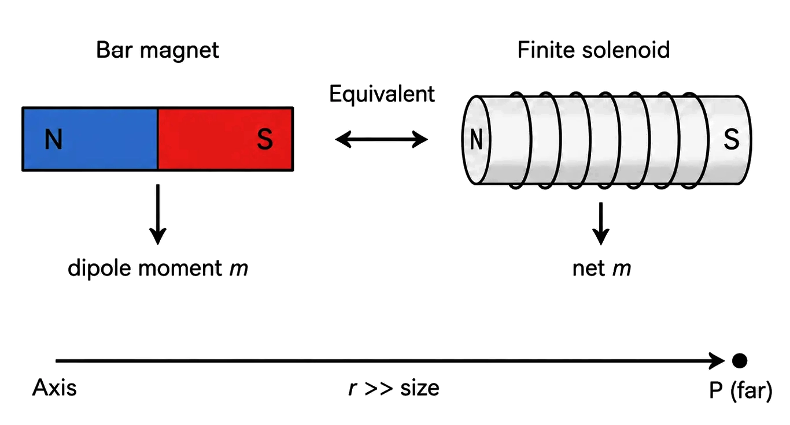
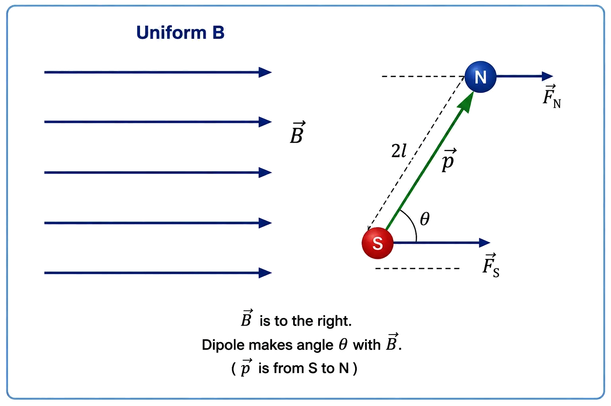
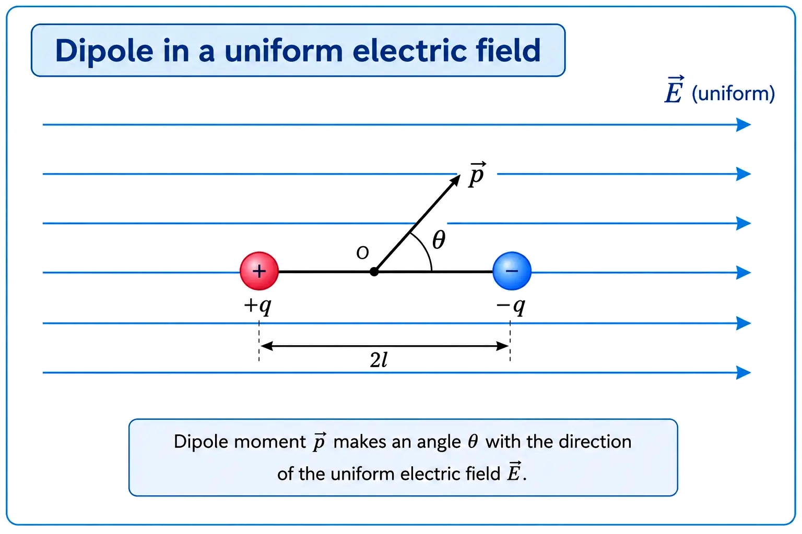
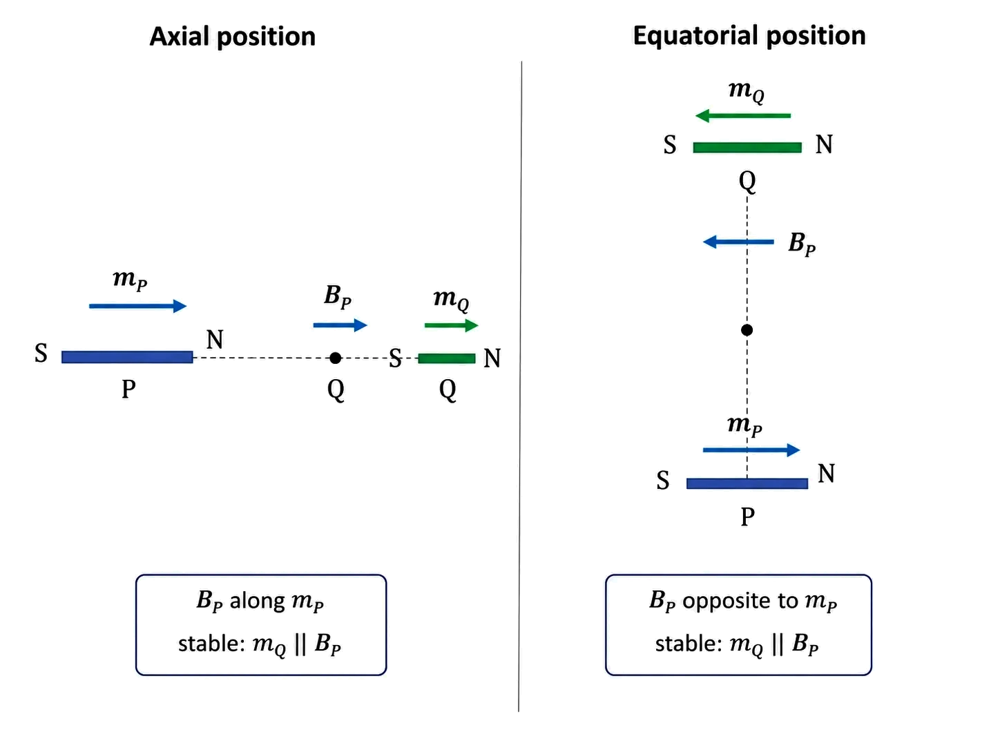
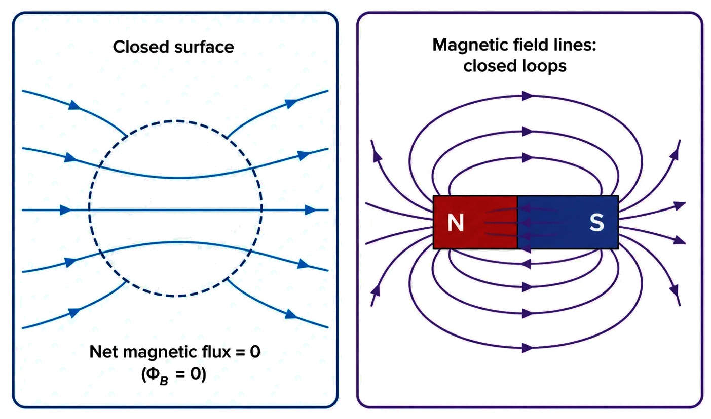
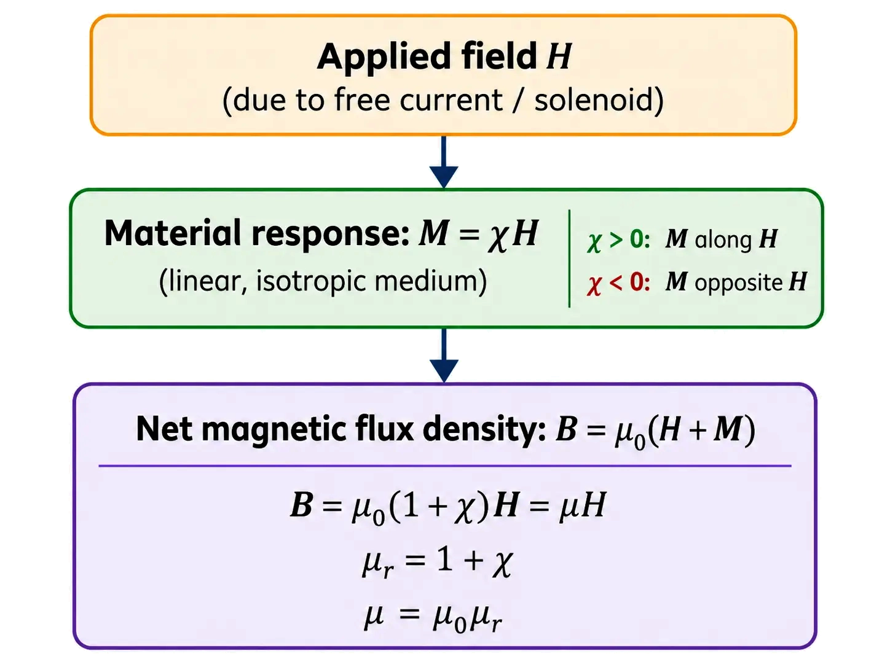
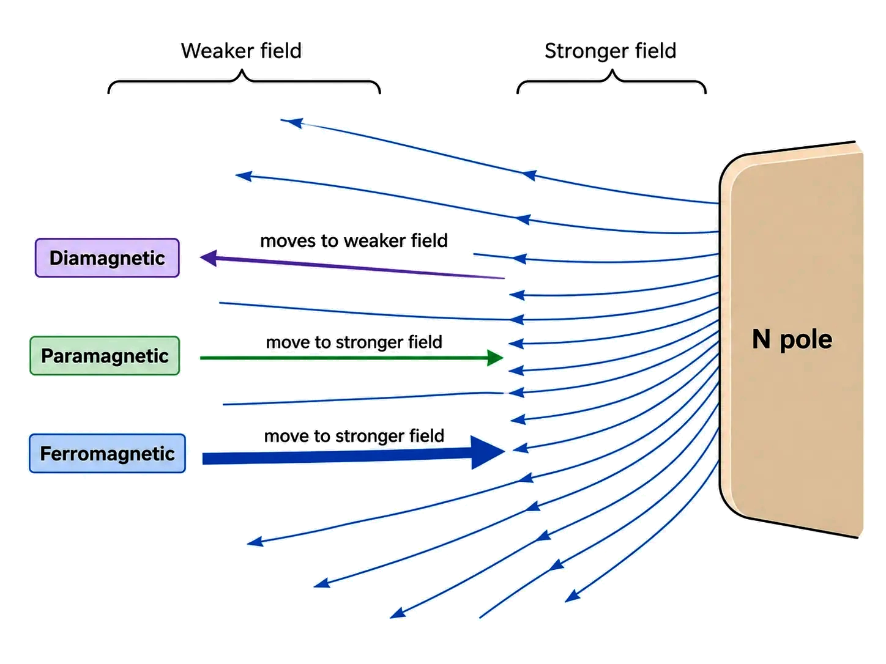
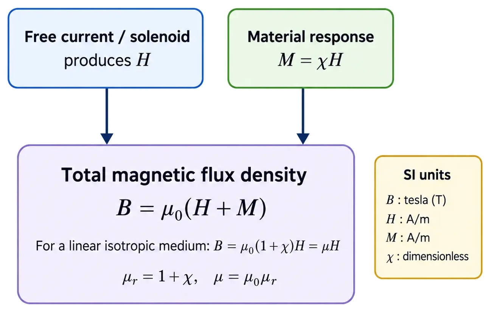

Physics
Magnetism and Matter
Earth behaves like a giant magnet: poles, attraction–repulsion, and why monopoles are
absent (in ordinary magnetism)
BASICS OF MAGNETISM
📖Definition & Introduction
- Magnetism refers to phenomena due to magnetic poles and magnetic fields produced by magnets and moving charges (electric currents).
- A bar magnet has two poles: north (N) and south (S); it acts like a magnetic dipole.
- A freely suspended bar magnet aligns approximately along the North–South direction.
- The end of a magnet that points toward geographic north is called the north pole of the magnet (north-seeking pole).
- Like poles repel (N–N, S–S), unlike poles attract (N–S).
- Isolated magnetic poles are not obtained by cutting a magnet; each piece still has N and S.
🖼️ Diagram

Earth’s magnetic field makes a freely suspended magnet align N–S; naming is by the
north-seeking end. (Field direction note is about the Earth-as-dipole model.)
🎯Key Concepts
- 🌍Earth behaves approximately like a magnet; in the dipole-model, Earth’s external B is roughly along Geo S → Geo N (field-line direction).
- 🧭Compass/bar magnet aligns with Earth’s field; the north-seeking end points to geographic north.
- ⚡Moving charges (electric current) produce magnetic fields; this links electricity and magnetism.
- ↔️Interaction rule: like poles repel; unlike poles attract.
- ✂️Breaking a magnet gives smaller magnets (dipoles), never a single N or single S.
- ⭕Magnetic field lines form continuous closed loops; no start/end is consistent with no monopoles in ordinary magnetism.
🔎POLES: NAMING + ATTRACTION/REPULSION
- Suspend a bar magnet freely: it settles along geographic North–South direction.
- End pointing to geographic north is called north pole (north-seeking pole).
- Like repel: N–N, S–S; unlike attract: N–S.
- Repulsion is the sure test of magnetisation; attraction can occur by induction in iron.
⚙️WHY NO ISOLATED POLES (NO MONOPOLES IN ORDINARY MAGNETS)
- Cutting a bar magnet produces two smaller magnets, each with both N and S.
- Magnetic field lines are closed loops: outside a bar magnet they go N → S; inside S → N.
- A “start” or “end” of B-lines would imply a magnetic charge; in ordinary magnetism this is not observed.
- Key result (school level): magnetic monopoles are not observed in ordinary magnetostatics.
⚖️Electric charges vs Magnetic poles (school-level)
| Basis | Electric charges | Magnetic poles (ordinary magnets) |
|---|---|---|
| Isolation possible? | Yes: + or − can exist alone | No: N or S alone not obtained by cutting |
| Field lines | Begin on +, end on − (or infinity) | Closed loops; no beginning/end |
| Gauss law idea | Net flux through closed surface can be nonzero | Net flux through closed surface is zero (no sources/sinks) |
| Smallest simple source | Monopole charge | Dipole / current loop |
✏️Solved Q&A
1
A bar magnet is cut into two pieces. What do you obtain and why?
Answer:
Each piece becomes a smaller bar magnet with its own N and S.
Reason: magnetic poles are not isolated; field lines remain closed, so each piece is still a dipole.
Each piece becomes a smaller bar magnet with its own N and S.
Reason: magnetic poles are not isolated; field lines remain closed, so each piece is still a dipole.
✓ Two smaller magnets, each having both north and south poles.
2
Two bars are brought near each other. In one orientation they repel. What can you
conclude?
Answer:
Repulsion occurs only when like poles face (N–N or S–S).
An unmagnetised iron bar gets induced poles and therefore shows attraction, not sure repulsion.
Repulsion occurs only when like poles face (N–N or S–S).
An unmagnetised iron bar gets induced poles and therefore shows attraction, not sure repulsion.
✓ Both bars are magnetised; repulsion is a decisive test of magnetisation.
⭐Important Points
- Earth behaves approximately like a bar magnet; a compass aligns along its field.
- In the Earth-as-dipole model, Earth’s external B is roughly along Geo S → Geo N (field-line direction).
- Naming of a magnet’s poles is by direction: end pointing to geographic north is called N pole.
- Like poles repel; unlike poles attract; use repulsion to confirm magnetisation.
- Breaking a magnet never isolates a pole; it creates smaller dipoles.
💡Memory Technique
“Mnemonic: N-seeking end”
📌Quick Recap
Magnetic field lines of a bar magnet/solenoid form closed continuous
loops (no start/end).Outside a bar magnet, field-line direction is N →
S; inside the magnet, S → N.Like poles repel; unlike poles attract;
repulsion is the sure test of magnetisation.Cutting a magnet gives
smaller magnets (dipoles), not an isolated pole.Earth behaves approximately
like a magnet; in the dipole-model, external B is roughly Geo S → Geo N.Pole naming: the end that points to geographic north is called the magnet’s north
(north-seeking) pole.Word origin: magnet from Magnesia (Greece),
known for magnetic ore.
Visualising a bar magnet as a magnetic dipole; mapping B using filings and a
compass
BAR MAGNET AND FIELD LINES
📖Definition & Introduction
- Bar magnet behaves like a magnetic dipole: two poles (N, S) with a characteristic surrounding magnetic field.
- Iron filings pattern on a sheet over a magnet traces the shape of magnetic field lines (not the lines themselves).
- A small compass placed at points around the magnet maps the direction of magnetic field B.
- Magnetic poles cannot be isolated; breaking a magnet gives two smaller dipoles, each with N and S.
- Field pattern of a bar magnet closely resembles that of a finite current-carrying solenoid (dipole-like outside).
🖼️ Diagram

Field lines around a bar magnet: closed loops; direction is given by tangent
(compass aligns with B).
🎯Key Concepts
- 🧭Compass mapping: needle aligns along local B; join tangents to sketch field lines.
- 🧲Outside magnet, lines go N → S; inside magnet, they return S → N to form loops.
- 🔁Magnetic field lines are continuous closed loops; no start/end (no monopoles).
- 📏Tangent at any point gives direction of B; arrow shows local field direction.
- 🟦Line density ∝ field strength: closer lines near poles ⇒ stronger |B|.
- 🚫Field lines never intersect; intersection would give two directions of B at one point.
🔎IRON FILINGS EXPERIMENT (PATTERN OF LINES)
- Place bar magnet under paper/glass sheet; sprinkle iron filings uniformly.
- Tap gently: filings align in chains along magnetic field direction.
- Crowding of filings near poles indicates stronger field there.
- Filings show the shape of lines; true field exists everywhere in space.
⚙️PLOTTING FIELD LINES WITH A COMPASS (MAPPING B)
- Keep magnet fixed; place a small compass at a point; mark needle direction.
- Move compass step-by-step; mark new directions; draw a smooth curve through tangents.
- Repeat from many starting points to obtain a family of lines.
- Arrow convention: outside magnet N → S; inside magnet S → N (loop closure).
⚖️BAR MAGNET vs CURRENT-CARRYING SOLENOID (FIELD-LINE VIEW)
| Basis | Bar magnet | Finite solenoid |
|---|---|---|
| Overall pattern | Dipole-like; distinct poles at ends | Very similar; one end acts like N, other like S |
| Field lines | Closed loops; outside N → S; inside S → N | Closed loops; inside nearly uniform, outside returns to close loops |
| On cutting into two parts | Two smaller magnets (each has N and S) | Two shorter solenoids (each remains dipole-like) |
| Physical origin (model) | Equivalent to many microscopic current loops in material | Actual turns carrying current form current loops |
✏️Solved Q&A
1
A student draws two magnetic field lines intersecting near a bar magnet to show a
complicated field. Is this diagram acceptable? Give the reason.
Answer:
At any point, direction of B is along the tangent to the field line.
If two lines intersect, there would be two tangents at the same point.
That implies two possible directions of B at one point, which is impossible.
At any point, direction of B is along the tangent to the field line.
If two lines intersect, there would be two tangents at the same point.
That implies two possible directions of B at one point, which is impossible.
✓ Not acceptable: magnetic field lines cannot intersect because B must
have a unique direction at every point.
2
In compass mapping around a bar magnet, why do we say field lines are closed loops
when the drawn lines outside seem to go from N to S?
Answer:
Outside the magnet, the direction of B is from N pole to S pole (so drawn arrows go N → S).
Magnetic field has no sources/sinks (no isolated poles), so lines cannot start or end in space.
Inside the magnet, B is from S to N, completing the path.
Thus each line forms a continuous closed loop through space and the magnet.
Outside the magnet, the direction of B is from N pole to S pole (so drawn arrows go N → S).
Magnetic field has no sources/sinks (no isolated poles), so lines cannot start or end in space.
Inside the magnet, B is from S to N, completing the path.
Thus each line forms a continuous closed loop through space and the magnet.
✓ Because lines continue through the magnet from S → N, so the full field line
is a closed loop even though the outside segment is N → S.
⭐Important Points
- Use term field lines as a representation of B, not physical threads in space.
- Outside a bar magnet: arrows point N → S; inside: S → N (needed for loop closure).
- Field is strongest near poles: shown by denser lines/filings crowding.
- Compass gives direction of B; iron filings mainly show pattern (shape) and relative strength.
- Similarity of patterns supports: bar magnet behaves like a magnetic dipole, like a finite solenoid.
💡Memory Technique
“Mnemonic: C-T-D-N (Closed–Tangent–Density–No-cross)”
📌Quick Recap
Outside a bar magnet: field line direction N → S; inside magnet: S → N
(to close loops).Magnetic field lines are continuous closed loops; no
start/end (no isolated poles).Tangent to a field line at a point gives
direction of B at that point.Closer field lines (or denser filings)
indicate stronger magnetic field magnitude.Field lines never intersect;
otherwise direction of B becomes ambiguous.Compass plotting: mark
needle direction at many points; draw smooth curves through these tangents.
Bar magnet ≈ many tiny current loops; far away both behave like one magnetic dipole
EQUIVALENT SOLENOID MODEL
📖Definition & Introduction
- A bar magnet can be modeled as an equivalent solenoid: many aligned microscopic current loops (Ampere’s hypothesis).
- Its magnetism is explained by circulating currents at atomic scale; net effect is a magnetic dipole moment m.
- The field-line pattern around a finite solenoid resembles that of a bar magnet (dipole-like outside).
- On cutting a bar magnet, you get two smaller magnets (no isolated pole), like cutting a solenoid gives two shorter solenoids.
- At large distances (r ≫ magnet size), axial field follows dipole law B ∝ 1/r3.
- The dipole approximation must not be used near the magnet/solenoid where field is not purely dipolar.
🖼️ Diagram

Same external dipole-like field at large r: bar magnet ↔ finite solenoid
(equivalent m).
🎯Key Concepts
- 🔁Ampere’s hypothesis: magnetism arises from microscopic circulating currents (tiny loops).
- 🧵Equivalent solenoid: stacked loops add to a net dipole moment m along the axis.
- ✂️Cutting a magnet never isolates a pole; it creates two dipoles (two N–S pairs).
- 📍Far on axis: Baxial = (μ0/4π)(2m/r3) directed along the axis.
- ⚠️Dipole formula valid only when r is much larger than magnet length/diameter.
🔎AMPERE’S HYPOTHESIS → WHY A MAGNET LOOKS LIKE A SOLENOID
- Each atom behaves like a tiny current loop (orbital/spin motion of electrons).
- In an unmagnetised piece, loop moments are random → net m ≈ 0.
- In a bar magnet, many loops align → large net dipole moment m along the length.
- A solenoid is a macroscopic arrangement of loops; the bar magnet is the microscopic analogue.
⚙️FAR-AXIAL FIELD TEST: WHEN IS THE EQUIVALENCE VALID?
- Use dipole approximation only if r ≫ (magnet/solenoid length and radius).
- On the axis far away, both give B ∝ 1/r3; near field is more complex.
- Equivalent solenoid is defined by same magnetic moment m as the bar magnet.
- Direction: on the axial line outside, B is along m (for the axial point shown).
⚖️BAR MAGNET vs FINITE SOLENOID (EQUIVALENT MODEL)
| Basis | Bar magnet | Finite current solenoid |
|---|---|---|
| Source picture | Many aligned microscopic loops (Ampere’s hypothesis) | Many turns carrying current (stack of loops) |
| Poles on cutting | Always gives two smaller magnets (no monopole) | Cut gives two shorter solenoids, each still dipole-like |
| External far field | Dipole field; B ∝ 1/r3 | Dipole-like field; B ∝ 1/r3 |
| Parameter matching | Magnetic dipole moment m | Dipole moment m = NIA (for a coil/solenoid) |
| Limitation | Dipole formulas fail near the magnet | Finite solenoid field near ends differs; dipole formulas fail nearby |
🧮Formulas
Magnetic dipole moment of a current loop (basis of solenoid model):
m = NIA
Dipole approximation for a short magnet/finite solenoid at an axial point far away:
Baxial = μ04π 2mr3
Rearrange to find dipole moment from a measured far-axial field:
m = 2πr3Bμ0
Thus, if a solenoid and bar magnet give same far-axial B at same r,
they have same m:
mmagnet = mequiv
solenoid
| μ0 = | Permeability of free space (T·m/A); μ0 = 4π × 10−7 |
| m = | Magnetic dipole moment (A·m2) |
| r = | Distance of observation point from dipole centre (m), with r ≫ size |
| N = | Number of turns (dimensionless) |
| I = | Current in each turn (A) |
| A = | Area of each loop (m2) |
Far-axial dipole field (key equivalence test)
Baxial(r ≫ size) = μ04π 2mr3
✏️Solved Examples
1
A bar magnet produces an axial magnetic field B = 2.0 × 10−5 T
at a point r = 0.50 m from its centre (far away). Find its magnetic dipole moment m.
Take μ0 = 4π × 10−7.
Solution:
Use far-axial dipole field: B = (μ0/4π)(2m/r3).
Since μ0/4π = 10−7, get B = 10−7 × (2m/r3).
So m = Br32 × 10−7.
r3 = (0.50)3 = 0.125 m3.
m = (2.0 × 10−5) × 0.1252 × 10−7 = 2.5 × 10−62 × 10−7 = 12.5 A·m2.
Use far-axial dipole field: B = (μ0/4π)(2m/r3).
Since μ0/4π = 10−7, get B = 10−7 × (2m/r3).
So m = Br32 × 10−7.
r3 = (0.50)3 = 0.125 m3.
m = (2.0 × 10−5) × 0.1252 × 10−7 = 2.5 × 10−62 × 10−7 = 12.5 A·m2.
✓ m = 12.5 A·m2
2
Design an equivalent solenoid for a bar magnet of dipole moment m = 0.80
A·m2. The solenoid has N = 200 turns and radius 1.0 cm. Find the current
I needed. (Use m = NIA.)
Solution:
Area per turn: A = πr2 with r = 1.0 cm = 1.0 × 10−2 m.
A = π(1.0 × 10−2)2 = π × 10−4 ≈ 3.14 × 10−4 m2.
Use m = NIA ⇒ I = mNA.
I = 0.80200 × 3.14 × 10−4 A = 0.806.28 × 10−2 A ≈ 12.7 A.
Area per turn: A = πr2 with r = 1.0 cm = 1.0 × 10−2 m.
A = π(1.0 × 10−2)2 = π × 10−4 ≈ 3.14 × 10−4 m2.
Use m = NIA ⇒ I = mNA.
I = 0.80200 × 3.14 × 10−4 A = 0.806.28 × 10−2 A ≈ 12.7 A.
✓ I ≈ 12.7 A
⭐Important Points
- Equivalent solenoid model is justified primarily by far-field (dipole) similarity and loop-current picture.
- Cutting a magnet yields two magnets: consistent with no magnetic monopoles and closed field lines.
- Use Baxial = (μ0/4π)(2m/r3) only when r ≫ size.
- For a solenoid/coil, m = NIA sets the strength of its dipole-like far field.
- Axial field is stronger than equatorial magnitude at same r (factor 2 vs 1).
💡Memory Technique
“Mnemonic: "FAR = 2m over r³"”
🧮Formula Sheet
Ampere model: bar magnet ≈ many tiny current loops aligned.Magnetic dipole moment (coil/solenoid): m = NIA.Far-axial field (dipole): Baxial =
(μ0/4π)(2m/r3).Inverse-cube check: in
dipole region, B ∝ r−3.Equivalence definition:
mmagnet = mequiv solenoid (same far field).Validity condition: apply dipole formulas only for r ≫ size; near field
differs.
Torque, magnetic potential energy, equilibrium (stable/unstable) and why uniform B
gives no net force
DIPOLE IN UNIFORM MAGNETIC FIELD
📖Definition & Introduction
- A magnetic dipole (moment m) in a uniform field B experiences a torque that tends to align m with B.
- Torque vector: τ = m × B; magnitude τ = mB sinθ.
- Magnetic potential energy: Um = −m·B = −mB cosθ (choose U=0 at θ=90°).
- Equilibrium when τ=0: θ=0° or 180°; decide stability using energy minimum/maximum.
- In a strictly uniform field (∇B=0), net force on a dipole is zero; only torque acts.
🖼️ Diagram

In uniform B, dipole feels torque τ = m×B; θ tends to reduce
toward 0°.
🎯Key Concepts
- 🧲Torque aligns dipole: τ ∝ sinθ, maximum at 90°, zero at 0° and 180°.
- 🔋Energy decides stability: minimum U at θ=0° (stable), maximum at 180° (unstable).
- 📌Uniform field: equal and opposite forces give net force 0; non-uniform field can give a net force.
- 🔩Near a magnet, an iron nail gets induced dipole moment and moves toward stronger |B|.
🔎TORQUE → RESTORING NATURE
- τ = mB sinθ acts to reduce θ (tries to align m along B).
- Small θ (about stable equilibrium): sinθ ≈ θ (radian) ⇒ τ ≈ −mB θ (restoring sign).
- Direction of τ given by right-hand rule for m×B.
⚙️ENERGY, EQUILIBRIUM & FORCE IDEA
- Um = −mB cosθ ⇒ minimum at θ=0° (stable), maximum at θ=180° (unstable).
- Torque is zero at both 0° and 180°, so stability must be checked from U(θ), not τ alone.
- Uniform field: forces on two poles equal/opposite ⇒ net force 0; non-uniform field: net force toward higher |B|.
- Induced magnetisation: soft iron nail becomes dipole, then moves toward stronger field near a magnet.
⚖️UNIFORM vs NON-UNIFORM MAGNETIC FIELD (DIPOLE EFFECTS: QUICK CONTRAST)
| Basis | Uniform field | Non-uniform field |
|---|---|---|
| Field variation | B same everywhere (∇B = 0) | B changes with position (∇B ≠ 0) |
| Net force on dipole | Zero net force | Nonzero in general; tends toward stronger |B| (e.g., induced dipole) |
| Torque | τ = mB sinθ (generally nonzero) | Torque present; plus net force |
| Example | Compass in Earth’s approximately uniform region | Iron nail near a bar magnet pole |
🧮Formulas
Torque on magnetic dipole in uniform field:
τ = m × B, τ = mB
sinθ
Potential energy change due to the field torque: dUm =
−τ·dθ ⇒ dUm = −τ dθ
dUm = −mB sinθ dθ
Integrate and choose U=0 at θ=90°:
Um = −∫ mB sinθ dθ =
−mB cosθ = −m·B
Equilibrium: τ=0, and stability from energy:
θ = 0° (min U, stable), θ = 180° (max U,
unstable)
| m = | Magnetic dipole moment vector (A m2) |
| B = | Uniform magnetic field vector (T) |
| θ = | Angle between m and B |
| τ = | Torque on the dipole (N m) |
| Um = | Magnetic potential energy (J) |
Energy–stability key
Um = −mB cosθ ⇒ stable at θ=0°, unstable at
θ=180°
✏️Solved Examples
1
A dipole of moment m = 0.20 A m2 is in a uniform field B
= 0.50 T at θ = 30°. Find (i) torque magnitude, (ii) potential energy taking U=0 at 90°.
Solution:
Use τ = mB sinθ = (0.20)(0.50) sin30°.
mB = 0.10 N m; sin30° = 0.5 ⇒ τ = 0.10 × 0.5 = 0.050 N m.
Use Um = −mB cosθ = −(0.20)(0.50) cos30°.
cos30° ≈ 0.866 ⇒ Um = −0.10 × 0.866 = −0.0866 J.
Use τ = mB sinθ = (0.20)(0.50) sin30°.
mB = 0.10 N m; sin30° = 0.5 ⇒ τ = 0.10 × 0.5 = 0.050 N m.
Use Um = −mB cosθ = −(0.20)(0.50) cos30°.
cos30° ≈ 0.866 ⇒ Um = −0.10 × 0.866 = −0.0866 J.
✓ τ = 0.050 N m; Um ≈ −0.087 J.
2
A dipole (m = 0.40 A m2) is rotated in uniform B = 0.30 T
from θ1=60° to θ2=120°. Find the change in potential energy and the work
done by an external agent in slow rotation.
Solution:
Use Um(θ) = −mB cosθ; so ΔU = U(120°) − U(60°).
mB = (0.40)(0.30) = 0.12 J.
cos60° = 0.5 ⇒ U(60°) = −0.12(0.5) = −0.060 J.
cos120° = −0.5 ⇒ U(120°) = −0.12(−0.5) = +0.060 J.
ΔU = +0.060 − (−0.060) = +0.120 J.
For slow rotation (no change in kinetic energy), external work Wext = ΔU.
Use Um(θ) = −mB cosθ; so ΔU = U(120°) − U(60°).
mB = (0.40)(0.30) = 0.12 J.
cos60° = 0.5 ⇒ U(60°) = −0.12(0.5) = −0.060 J.
cos120° = −0.5 ⇒ U(120°) = −0.12(−0.5) = +0.060 J.
ΔU = +0.060 − (−0.060) = +0.120 J.
For slow rotation (no change in kinetic energy), external work Wext = ΔU.
✓ ΔU = +0.120 J; external work Wext = +0.120 J.
⭐Important Points
- Vector form: τ = m×B; magnitude uses sin of angle between vectors.
- In a strictly uniform B, a dipole has torque but zero net force.
- Energy: Um = −m·B; lowest when parallel, highest when anti-parallel.
- Equilibrium angles: 0° and 180° both have τ=0; only 0° is stable (energy minimum).
- Exam cue: "uniform field" for a dipole usually implies torque only, no translation.
💡Memory Technique
“PARA is PEACE, ANTI is AGONY”
🧮Formula Sheet
τ = m × Bτ =
mB sinθUm = −m·B =
−mB cosθ (choose U=0 at 90°)Equilibrium angles: θ = 0°
(stable), θ = 180° (unstable)Uniform B (∇B=0): net force on a
dipole = 0 (torque may act)
Far-field of a short bar magnet (r ≫ l) + one-to-one mapping with electric dipole results
DIPOLE FIELD & ELECTROSTATIC ANALOG
📖Definition & Introduction
- A short bar magnet observed at r ≫ l behaves like an ideal magnetic dipole of moment m.
- On the axial line, B is along m and falls as 1/r3 (dipole field).
- On the equatorial line, B is opposite to m and falls as 1/r3.
- Electrostatic analog: replace E ↔ B, p ↔ m, 14πε0 ↔ μ04π.
- In uniform fields, torque and energy follow the same vector forms for electric and magnetic dipoles.
🖼️ Diagram

Short bar magnet (dipole): axial point has B along m; equatorial point
has B opposite m.
🎯Key Concepts
- 📏Dipole (far-field) condition: r ≫ l so higher multipoles are negligible.
- 🧭Direction rule: dipole moment m is along the magnet axis from S → N (same direction as B on the axial line far away).
- ➖Negative sign in equatorial field means B is anti-parallel to m on that line.
- 🧠Same math as electric dipole: swap constants and moments systematically.
- ⚙️Uniform-field interaction: τ=m×B, U=−m·B (stable when parallel).
🔎AXIAL & EQUATORIAL FIELDS (DIPOLE APPROX.)
- Axial (on axis): BA=μ04π2mr3 (direction: along m).
- Equatorial (normal bisector): BE=−μ04πmr3 (direction: opposite to m).
- Magnitude ratio at same r: |BA| : |BE| = 2 : 1.
- Both fields scale as 1/r3; doubling r reduces field by factor 8.
⚙️ELECTROSTATIC ANALOG (SYSTEMATIC REPLACEMENTS)
- Field mapping: E ↔ B.
- Dipole moment mapping: electric p ↔ magnetic m.
- Constant mapping: 14πε0 ↔ μ04π.
- Torque mapping in uniform field: τ=p×E ↔ τ=m×B.
- Energy mapping in uniform field: U=−p·E ↔ U=−m·B (stable when parallel).
⚖️ELECTRIC DIPOLE ↔ MAGNETIC DIPOLE (FAR FIELD + UNIFORM FIELD)
| Quantity | Electric dipole | Magnetic dipole |
|---|---|---|
| Field symbol | E | B |
| Dipole moment | p (C·m) | m (A·m2) |
| Multiplicative constant in dipole field expressions | 14πε0 | μ04π |
| Axial field (r ≫ size) | 14πε02pr3 | μ04π2mr3 |
| Equatorial field (r ≫ size) | −14πε0pr3 | −μ04πmr3 |
| Torque in uniform field | τ=p×E | τ=m×B |
🧮Formulas
Vector form of dipole field (magnetic case) at position vector r from dipole
center (valid for r ≫ size).
B(r)=μ04π1r3[3(m·r̂)r̂−m]
Axial point: r̂ ∥ m ⇒ (m·r̂)=m and r̂ is
along m.
BA=μ04π1r3[3m−m]=μ04π2mr3
Equatorial point: r̂ ⟂ m ⇒ (m·r̂)=0.
BE=μ04π1r3[0−m]=−μ04πmr3
| m = | Magnetic dipole moment of magnet (A·m2) |
| r = | Distance of observation point from dipole center (m) |
| μ0 = | Permeability of free space (≈ 4π × 10−7 T·m/A) |
| r̂ = | Unit vector from dipole to field point |
| τ = | Torque on dipole in uniform field (N·m) |
| U = | Potential energy in uniform field (J) |
| θ = | Angle between m and B (or p and E) |
Core dipole results (r ≫ l)
BA=μ04π2mr3, BE=−μ04πmr3
✏️Solved Examples
1
A short bar magnet has magnetic dipole moment m=0.40 A·m2. Find
the magnetic field at r=0.20 m on (i) axial line, (ii) equatorial line. Use
μ0/4π = 10−7 (SI).
Solution:
Compute r3 = (0.20)3 = 0.008 m3.
(i) Axial: BA = (10−7) × 2mr3 = 10−7 × 2×0.400.008.
0.800.008 = 100 ⇒ BA = 100×10−7 T = 1.0×10−5 T.
(ii) Equatorial: BE = −(10−7) × mr3 = −10−7 × 0.400.008.
0.400.008 = 50 ⇒ BE = −50×10−7 T = −5.0×10−6 T.
Compute r3 = (0.20)3 = 0.008 m3.
(i) Axial: BA = (10−7) × 2mr3 = 10−7 × 2×0.400.008.
0.800.008 = 100 ⇒ BA = 100×10−7 T = 1.0×10−5 T.
(ii) Equatorial: BE = −(10−7) × mr3 = −10−7 × 0.400.008.
0.400.008 = 50 ⇒ BE = −50×10−7 T = −5.0×10−6 T.
✓ (i) BA = 1.0×10−5 T (along m)
(ii) BE = −5.0×10−6 T (opposite m)
(ii) BE = −5.0×10−6 T (opposite m)
2
A magnetic dipole of moment m=0.20 A·m2 is in a uniform field
B=0.50 T making angle θ=60° with m. Find (i) torque magnitude, (ii) potential energy
(take U=−mBcosθ).
Solution:
(i) τ = mBsinθ = (0.20)(0.50)sin60°.
(0.20)(0.50)=0.10 and sin60°=√3/2≈0.866 ⇒ τ≈0.10×0.866=0.0866 N·m.
(ii) U=−mBcosθ = −(0.20)(0.50)cos60°.
cos60°=0.5 ⇒ U=−0.10×0.5=−0.050 J.
(i) τ = mBsinθ = (0.20)(0.50)sin60°.
(0.20)(0.50)=0.10 and sin60°=√3/2≈0.866 ⇒ τ≈0.10×0.866=0.0866 N·m.
(ii) U=−mBcosθ = −(0.20)(0.50)cos60°.
cos60°=0.5 ⇒ U=−0.10×0.5=−0.050 J.
✓ τ ≈ 8.66×10−2 N·m
U = −5.0×10−2 J
U = −5.0×10−2 J
⭐Important Points
- Always mention dipole approximation: use axial/equatorial formulas only for r ≫ l.
- Axial field is twice the equatorial magnitude at the same distance (2:1).
- Equatorial field carries a negative sign because its direction is opposite to m.
- Uniform field: dipole has torque but no net force; stability from energy minimum.
- Energy extrema: θ=0° ⇒ Umin=−mB (stable), θ=180° ⇒ Umax=+mB (unstable).
💡Memory Technique
“AE: 2-and-minus”
🧮Formula Sheet
Dipole condition: r ≫ l (bar magnet behaves like ideal
dipole).BA=μ04π2mr3 (axial).BE=−μ04πmr3 (equatorial).τ=m×B, |τ|=mBsinθ.U=−m·B=−mBcosθ.Analog map:
E↔B, p↔m, 14πε0↔μ04π.
Decide equilibrium, stability and lowest energy by first finding BP at
Q
TWO DIPOLES EQUILIBRIUM
📖Definition & Introduction
- Two magnetic needles (dipoles) P and Q interact via the field BP produced by P at the location of Q.
- Treat the system energy as U = −mQ·BP (dipole Q in the field produced by P).
- Equilibrium orientation occurs when torque on Q is zero: mQ parallel or anti-parallel to BP.
- Stable equilibrium: mQ ∥ BP (energy minimum).
- Unstable equilibrium: mQ anti-∥ BP (energy maximum).
- Lowest-energy configuration is the one with the most negative U, after using the correct direction of BP (axial vs equatorial).
🖼️ Diagram

Find BP at Q (axial/equatorial), then apply parallel-stable,
anti-parallel-unstable.
🎯Key Concepts
- 1Step-1: Identify whether Q lies on axis or equatorial line (normal bisector) of P.
- 2Step-2: Find direction of BP (equatorial field is opposite to mP).
- 3Step-3: Compare mQ with BP: parallel → stable; anti-parallel → unstable.
- 4Lowest energy when mQ aligns with BP and |BP| is maximum.
- 5Compass analogy: needle aligns with Earth’s B (stable), reversed is unstable.
🔎WORKING RULE (EXAM STYLE)
- Locate Q: on axis of P or on equatorial line (normal bisector).
- Write BP: axial BP = μ04π2mPr3; equatorial BP = −μ04πmPr3.
- Direction first: minus sign means BP opposite to mP on the equatorial line.
- Equilibrium: torque zero when mQ ∥ BP or anti-∥.
- Stability: U=−mQBPcosθ ⇒ θ=0 stable, θ=π unstable.
⚙️ENERGY RANKING (LOWEST CONFIGURATION)
- For fixed mQ, lowest energy when cosθ=+1 ⇒ mQ ∥ BP.
- Between positions (axial vs equatorial) at same r: |Baxis| = 2|Beq|.
- So, if Q can be placed either on axis or equatorial at the same r, lowest U occurs on axis with mQ along BP.
- Procedure: determine direction of BP at Q (axial/equatorial), then compare mQ with BP.
⚖️AXIAL vs EQUATORIAL FIELD OF DIPOLE P (AT DISTANCE r)
| Basis | Axial point | Equatorial point |
|---|---|---|
| Magnitude | BP = μ04π 2mPr3 | |BP| = μ04π mPr3 |
| Direction vs mP | Same direction as mP (along axis) | Opposite to mP (negative sign) |
| Stable orientation of Q | mQ ∥ BP (along axial BP) | mQ ∥ BP (so it becomes opposite to mP) |
| Relative strength (same r) | Stronger (×2) | Weaker (×1) |
🧮Formulas
Field of dipole P (dipole approximation, r ≫ size of magnet):
Axial: BP = μ04π 2mPr3
Equatorial: BP = − μ04π mPr3
Use dipole energy of Q in this field:
U = −mQ·BP =
−mQBPcosθ
Equilibrium from energy extrema: dU/dθ = 0 ⇒ sinθ = 0
θ = 0° (parallel) or 180° (anti-parallel)
Stability from energy view:
θ = 0° ⇒ Umin =
−mQBP (stable), θ = 180° ⇒ Umax =
+mQBP (unstable)
| mP = | Magnetic dipole moment of needle P (A·m²) |
| mQ = | Magnetic dipole moment of needle Q (A·m²) |
| r = | Distance between centre of P and location of Q (m) |
| μ0 = | Permeability of free space (4π × 10−7 N/A²) |
| θ = | Angle between mQ and BP |
| U = | Potential energy of Q in field of P (J) |
Stability rule (use after finding direction of BP)
mQ ∥
BP ⇒ stable (lowest U); mQ anti-∥ BP
⇒ unstable (highest U)
✏️Solved Examples
1
Dipole P has mP = 0.50 A·m². Dipole Q is on the axis of P at
r = 0.20 m. If mQ = 0.10 A·m², find (i) BP at Q, (ii)
the stable orientation of Q, (iii) Umin and Umax.
Solution:
Axial field: BP = μ04π 2mPr3 with μ04π = 10−7.
r3 = (0.20)3 = 0.008 m3; 2mP = 1.0 A·m².
BP = 10−7 × 1.00.008 = 1.25 × 10−5 T, directed along the axis in the same direction as mP.
Stable equilibrium: mQ ∥ BP (θ=0°). Unstable: mQ anti-∥ BP (θ=180°).
U = −mQBPcosθ. So Umin = −(0.10)(1.25×10−5) = −1.25×10−6 J.
Umax = +(0.10)(1.25×10−5) = +1.25×10−6 J.
Axial field: BP = μ04π 2mPr3 with μ04π = 10−7.
r3 = (0.20)3 = 0.008 m3; 2mP = 1.0 A·m².
BP = 10−7 × 1.00.008 = 1.25 × 10−5 T, directed along the axis in the same direction as mP.
Stable equilibrium: mQ ∥ BP (θ=0°). Unstable: mQ anti-∥ BP (θ=180°).
U = −mQBPcosθ. So Umin = −(0.10)(1.25×10−5) = −1.25×10−6 J.
Umax = +(0.10)(1.25×10−5) = +1.25×10−6 J.
✓ (i) BP = 1.25 × 10−5 T along the axis (same
direction as mP); (ii) stable when mQ is along
BP; (iii) Umin = −1.25×10−6 J,
Umax = +1.25×10−6 J.
2
Dipole Q is placed on the equatorial line of dipole P at r = 0.30 m. Given
mP = 0.60 A·m² and mQ = 0.20 A·m². If mP
points east, find (i) direction and magnitude of BP at Q, (ii) stable direction
of Q, (iii) lowest possible U.
Solution:
Equatorial field: BP = − μ04π mPr3. Negative sign ⇒ direction opposite to mP.
r3 = (0.30)3 = 0.027 m3; magnitude |BP| = 10−7 × 0.600.027.
0.600.027 = 22.222... so |BP| = 2.22 × 10−6 T (approx).
Since mP is east, BP at an equatorial point is west.
Stable equilibrium: mQ ∥ BP ⇒ Q must point west.
Lowest energy: Umin = −mQ|BP| = −(0.20)(2.22×10−6) = −4.44×10−7 J (approx).
Equatorial field: BP = − μ04π mPr3. Negative sign ⇒ direction opposite to mP.
r3 = (0.30)3 = 0.027 m3; magnitude |BP| = 10−7 × 0.600.027.
0.600.027 = 22.222... so |BP| = 2.22 × 10−6 T (approx).
Since mP is east, BP at an equatorial point is west.
Stable equilibrium: mQ ∥ BP ⇒ Q must point west.
Lowest energy: Umin = −mQ|BP| = −(0.20)(2.22×10−6) = −4.44×10−7 J (approx).
✓ (i) BP ≈ 2.22 × 10−6 T toward west; (ii)
stable when Q points west; (iii) Umin ≈ −4.44 × 10−7 J.
⭐Important Points
- Always decide direction of BP first (axial vs equatorial); sign carries direction.
- Equilibrium means torque zero; it occurs for both parallel and anti-parallel, but stability differs.
- Use energy test: minimum U stable, maximum U unstable; torque alone misleads.
- At same r, axial field is twice equatorial field, so axial placement with alignment tends to give lower energy.
- Valid only in dipole approximation: r must be much larger than magnet size.
💡Memory Technique
“Mnemonic: "Find B, then Follow B"”
🧮Formula Sheet
Axial: BP = μ04π 2mPr3Equatorial: BP = − μ04π mPr3U (Q in P’s field): U = −mQ·BP =
−mQBPcosθEquilibrium: sinθ=0 ⇒ θ=0° or
180°Stable: θ=0°; Unstable: θ=180°At same r:
|Baxis| = 2|Beq|
Net magnetic flux through any closed surface is zero ⇒ no magnetic monopoles
GAUSS LAW FOR MAGNETISM
📖Definition & Introduction
- Gauss’s law of magnetism: net magnetic flux through any closed surface is zero.
- Magnetic flux through an area element: ΔφB = B·ΔS.
- Interpretation: no sources/sinks of B; field lines never start or end.
- Hence magnetic field lines are closed continuous loops (outside N→S, inside S→N for a bar magnet).
- Unlike electrostatics, there are no isolated N or S poles (no monopoles in standard physics).
- Used to validate/invalid magnetic field-line diagrams and conceptual claims about flux.
🖼️ Diagram

Gauss’s law: net magnetic flux through a closed surface is zero; magnetic field
lines form closed loops.
🎯Key Concepts
- ⭕Any closed surface has net φB = 0 (even if B is nonzero on the surface).
- 🚫No monopoles: breaking a magnet gives two dipoles; you cannot isolate a single pole.
- 🧭Field line tangent gives direction of B; density indicates magnitude.
- ❌Field lines never cross; crossing would give two directions of B at one point.
- 🌀In magnetostatics, circles around a straight current-carrying wire and circles inside a toroid are closed B-loops (each such loop encloses current).
- ➡️Magnetic force on a charge is F = q(v×B): not along field lines.
🔎STATEMENT + INTERPRETATION
- Integral form: ∮S B·dS = 0 for any closed surface S.
- Surface-sum form: φB = Σ(B·ΔS) = 0 (sum over all small area elements of the closed surface).
- Meaning: total “outflow” of B equals total “inflow”; no net magnetic charge enclosed.
- Cutting a bar magnet creates smaller dipoles; does not create isolated N or isolated S.
⚙️USING IT TO CHECK FIELD-LINE DIAGRAMS (JEE/NEET FAVOURITE)
- Reject any diagram where lines start/end on an object (would imply monopoles, nonzero net flux).
- Reject any diagram with crossing lines (direction of B becomes non-unique).
- Accept: bar magnet lines are N→S outside and return inside to close the loop.
- Accept: around a straight current-carrying wire, field lines are concentric circles (closed).
- Accept: toroid has field lines confined in core, forming circles (each loop encloses current).
⚖️GAUSS LAW: ELECTROSTATICS vs MAGNETISM
| Basis | Electrostatics | Magnetism (magnetostatics) |
|---|---|---|
| Gauss law (closed surface) | ∮ E·dS = qenc/ε0 | ∮ B·dS = 0 |
| Sources/sinks | Charges act as sources (+) and sinks (−) of E | No sources/sinks of B (no monopoles observed) |
| Field lines | Begin on + and end on − (or infinity); not closed loops | Always closed continuous loops; cannot start/end |
| If “monopoles” existed | Already included as electric charges | Would become ∮ B·dS = μ0qm |
| Force vs field lines | F on a positive test charge is along E | F = q(v×B) is perpendicular to B (for v not parallel to B) |
✏️Solved Q&A
1
A diagram shows magnetic field lines radiating outward from a point (like spokes).
Is it valid for magnetism? What could it represent instead?
Answer:
Radiating lines imply a source of field: net outward flux through a surrounding closed surface would be nonzero.
But Gauss’s law for magnetism requires ∮ B·dS = 0, so such a source is impossible in standard magnetostatics.
A similar pattern can represent the electric field of a positively charged object (where Gauss’s law gives nonzero flux).
Radiating lines imply a source of field: net outward flux through a surrounding closed surface would be nonzero.
But Gauss’s law for magnetism requires ∮ B·dS = 0, so such a source is impossible in standard magnetostatics.
A similar pattern can represent the electric field of a positively charged object (where Gauss’s law gives nonzero flux).
✓ Invalid for magnetic fields; it matches an electrostatic field pattern
(source charge), not B.
2
A student says: "Magnetic field lines show the direction of force on a moving
charge." Correct or incorrect? Justify.
Answer:
Magnetic force on a charge is F = q(v×B).
A cross product is perpendicular to both vectors, so F ⟂ B (for v not parallel to B).
Therefore field lines indicate direction of B, not the direction of force; calling them "lines of force" is misleading.
Magnetic force on a charge is F = q(v×B).
A cross product is perpendicular to both vectors, so F ⟂ B (for v not parallel to B).
Therefore field lines indicate direction of B, not the direction of force; calling them "lines of force" is misleading.
✓ Incorrect: magnetic field lines give direction of B, while
force is generally perpendicular to B.
⭐Important Points
- Gauss’s law of magnetism holds for any closed surface: net flux is always zero.
- Zero flux does not mean B is zero; it means equal entry and exit through the surface.
- Field-line rules: closed loops, no start/end, no crossing; density ∝ |B|.
- Bar magnet: lines outside N→S, inside S→N; cutting magnet gives two N–S pairs.
- Magnetic field around a straight current-carrying wire: concentric circles (closed loops).
💡Memory Technique
“Mnemonic: "B is a LOOP"”
📌Quick Recap
Magnetic flux element (small area): ΔφB =
B·ΔSGauss’s law (magnetism): ∮S
B·dS = 0 for any closed surfaceMeaning: no
sources/sinks of B ⇒ field lines are closed continuous loopsField lines never cross; tangent gives direction of B; density indicates
|B|If monopoles existed (hypothetical): ∮S
B·dS = μ0qmMagnetic
force on a moving charge: F = q(v×B) ⇒ force is
generally not along B-lines
Separate source field (H) from material response (M) and build B
MAGNETISATION (M) AND MAGNETIC INTENSITY (H)
📖Definition & Introduction
- Magnetisation M is net magnetic dipole moment per unit volume: M = mnetV.
- M is a vector along the average dipole alignment; SI unit A m−1.
- In matter, B depends on free currents and magnetisation; commonly written as B = μ0(H+M), where H accounts for free-current effects.
- Magnetic intensity H is defined by H = Bμ0 − M, to isolate external (free-current) causes.
- Key identity: B = μ0(H + M), valid by definition of H.
- For a long solenoid, H depends only on free current: H = nI (approximately independent of the core material).
🖼️Diagram
Flow: free current sets H; material creates M; together give B.
🎯Key Concepts
- 🧠M is the material response; H is the magnetising field produced by free currents.
- 🧲Inside a long solenoid: in air/vacuum B = μ0nI; inserting a core adds magnetisation so B becomes μ0(H+M).
- 🧾Linear medium: M = χH, μr = 1 + χ, so B = μ0μrH.
- ⚠️Exam trap: never write H = μrnI; μr affects B, not H (for a long solenoid).
🔎SOLENOID WITH/WITHOUT CORE (FIELD BUILD-UP)
- Empty long solenoid: B = μ0nI and H = nI.
- Inserting a magnetisable core produces magnetisation M in the core.
- General identity in matter: B = μ0(H + M); so core increases B by increasing M.
- Linear core: M = χH ⇒ B = μ0(1+χ)H = μ0μrH.
⚙️MAGNETISING CURRENT IM (USEFUL IDEA)
- Define IM: extra current needed in air (no core) to produce the same B as with the core (linear case).
- With core: B = μrμ0nI; without core for same B: μ0n(I+IM) = μrμ0nI.
- Hence IM = (μr−1)I (linear medium approximation).
⚖️FIELDS IN MATTER: WHAT SETS WHAT?
| Quantity | Depends mainly on | Key relation |
|---|---|---|
| H | Free (conduction) current + geometry | Long solenoid: H = nI |
| M | Material response to H | Linear: M = χH |
| B | Both source + response | B = μ0(H+M) = μ0μrH (linear) |
🧮Formulas
Definition of magnetic intensity H in matter (separates material response).
H = Bμ0 − M
Rearrange to obtain the standard identity connecting B, H, M.
B = μ0(H + M)
For a long solenoid (magnetostatics), the magnetising field is set by free current.
H = nI
Linear medium relation (definition of susceptibility for linear isotropic medium).
M = χH ⇒ B = μ0(1+χ)H =
μ0μrH
| M = | Magnetisation = net magnetic moment per unit volume (A m−1) |
| mnet = | Net magnetic dipole moment of the sample (A m2) |
| V = | Volume of the sample (m3) |
| H = | Magnetic intensity / magnetising field (A m−1) |
| B = | Magnetic flux density (tesla, T) |
| μ0 = | Permeability of free space = 4π×10−7 T m A−1 |
| n = | Turns per unit length of solenoid (m−1) |
| χ, μr = | Susceptibility (dimensionless), relative permeability (dimensionless) |
Most important result
B = μ0(H + M)
✏️Solved Examples
1
Example 1 (based on Example 5.5): A long solenoid has n=1000
m−1, current I=2 A. A core with μr=400 is inserted. Find (a) H
(b) M (c) B (d) magnetising current IM. Take
μ0=4π×10−7.
Solution:
(a) For long solenoid: H=nI=1000×2=2000 A m−1.
(b) χ=μr−1=399 ⇒ M=χH=399×2000=798000 A m−1 ≈ 7.98×105 A m−1.
(c) B=μ0μrH = (4π×10−7)×400×2000 T = 4π×10−7×8×105 T = 32π×10−2 T ≈ 1.005 T ≈ 1.0 T.
(d) Same B without core: μ0n(I+IM) = μrμ0nI ⇒ IM=(μr−1)I=399×2=798 A.
(a) For long solenoid: H=nI=1000×2=2000 A m−1.
(b) χ=μr−1=399 ⇒ M=χH=399×2000=798000 A m−1 ≈ 7.98×105 A m−1.
(c) B=μ0μrH = (4π×10−7)×400×2000 T = 4π×10−7×8×105 T = 32π×10−2 T ≈ 1.005 T ≈ 1.0 T.
(d) Same B without core: μ0n(I+IM) = μrμ0nI ⇒ IM=(μr−1)I=399×2=798 A.
✓ H=2.0×103 A/m, M≈7.98×105 A/m,
B≈1.0 T, IM≈7.98×102 A.
2
Example 2: A core in a solenoid produces magnetisation M=3.0×104
A/m. The magnetising field is H=500 A/m. Find (a) χ (b) μr (c) B (d)
material contribution to B due to magnetisation. Take μ0=4π×10−7.
Solution:
(a) χ=MH=3.0×104500=60.
(b) μr=1+χ=61.
(c) B=μ0(H+M)=4π×10−7×(500+30000) T =4π×10−7×30500 T ≈ 3.83×10−2 T.
(d) Contribution due to magnetisation term: μ0M=4π×10−7×3.0×104 T = 12π×10−3 T ≈ 3.77×10−2 T.
(a) χ=MH=3.0×104500=60.
(b) μr=1+χ=61.
(c) B=μ0(H+M)=4π×10−7×(500+30000) T =4π×10−7×30500 T ≈ 3.83×10−2 T.
(d) Contribution due to magnetisation term: μ0M=4π×10−7×3.0×104 T = 12π×10−3 T ≈ 3.77×10−2 T.
✓ χ=60, μr=61, B≈3.83×10−2 T,
μ0M≈3.77×10−2 T.
⭐Important Points
- M has unit A/m (not A m2); it is magnetic moment per volume.
- In matter: B = μ0(H+M); H is used to represent free-current magnetising effect.
- Long solenoid: H=nI depends on free current only; core changes B mainly via M (linear case).
- Linear medium: χ=μr−1 and M=χH; then B=μ0μrH.
💡Memory Technique
“Hook: "H is Hardware, M is Material"”
🧮Formula Sheet
M = mnetV (A/m)Definition: B = μ0(H+M)Definition:
H = Bμ0 −
MLong solenoid: H=nI, and in air/vacuum
B=μ0nILinear medium: M=χH,
μr=1+χ, so B=μ0μrHMagnetising
current idea (linear): IM=(μr−1)I
How materials respond to H: from M to B using χ and μ
SUSCEPTIBILITY AND PERMEABILITY
📖Definition & Introduction
- Magnetic susceptibility χ is the material response defined by χ = MH for a linear medium.
- For linear, isotropic media: M = χH; M is along H if χ > 0, opposite if χ < 0.
- Magnetic flux density: B = μ0(H + M) (magnetostatics in matter).
- In linear media, define relative permeability μr using B = μ0μrH.
- Key relation (linear, isotropic): μr = 1 + χ and μ = μ0μr = μ0(1 + χ).
- χ and μr are dimensionless; μ has unit N A−2 (same as μ0).
🖼️ Diagram

Cause–response chain: H (free currents) ⇒ M (material) ⇒ total
B.
🎯Key Concepts
- •Linear material: M ∝ H (constant χ); otherwise χ depends on H.
- •Sign of χ sets direction of M: diamagnetic χ < 0, paramagnetic χ > 0; ferromagnets can have very large effective χ.
- •μr is the magnetic analogue of dielectric constant (relative permittivity).
- •H is set mainly by free currents (e.g., solenoid): for a long solenoid, H = nI (ideal), not μrnI.
🔎DERIVATION: μr = 1 + χ (LINEAR, ISOTROPIC)
- Start with B = μ0(H + M) and linear law M = χH.
- Substitute: B = μ0(H + χH) = μ0(1 + χ)H.
- Define μr by B = μ0μrH ⇒ μr = 1 + χ.
- Then μ = μ0μr = μ0(1 + χ).
⚙️INTERPRETATION: WHAT χ AND μr TELL YOU
- If χ < 0 ⇒ M opposite H; hence μr = 1 + χ < 1 and B is slightly reduced.
- If χ > 0 (small) ⇒ M along H; hence μr slightly > 1 and B is slightly increased.
- If χ is very large (ferromagnets) ⇒ response is often nonlinear; effective μr can be very large and depends on H.
- Special (ideal): perfect diamagnet (superconductor) χ = −1 ⇒ μr = 0 ⇒ B ≈ 0 inside (Meissner state, idealised).
⚖️Material response via χ and μr
| Basis | Diamagnetic | Paramagnetic | Ferromagnetic |
|---|---|---|---|
| Susceptibility χ | χ < 0 (small magnitude) | χ > 0 (small) | χ ≫ 1 (very large; often nonlinear) |
| Direction of M | Opposite to H | Along H | Strongly along H (domain alignment) |
| Relative permeability μr | μr < 1 but close to 1 | μr slightly > 1 | μr ≫ 1 (can vary with H) |
| Effect on B (same H) | Slightly decreases B | Slightly increases B | Greatly increases B |
🧮Formulas
Start from definition of susceptibility (linear medium):
χ = MH ⇒ M = χH
Use relation between B, H, M:
B = μ0(H + M)
Substitute M = χH:
B = μ0(1 + χ)H
Define μr by B = μ0μrH:
μr = 1 + χ and μ = μ0μr
| χ = | magnetic susceptibility (dimensionless) |
| M = | magnetisation; magnetic moment per unit volume (A m−1) |
| H = | magnetic intensity / magnetising field (A m−1) |
| B = | magnetic flux density (tesla, T) |
| μ0 = | permeability of free space (≈ 4π × 10−7 N A−2) |
| μ, μr = | permeability (N A−2) and relative permeability (dimensionless) |
Most important result (linear isotropic media)
B = μ0(1 + χ)H =
μ0μrH = μH with μr = 1 + χ
✏️Solved Examples
1
A material has χ = 0.20. If H = 800 A m−1, find (i) M,
(ii) μr, (iii) B. Take μ0 = 4π × 10−7 N A−2.
(Assume linear isotropic medium.)
Solution:
(i) M = χH = 0.20 × 800 = 160 A m−1.
(ii) μr = 1 + χ = 1.20.
(iii) B = μ0μrH = (4π × 10−7) × 1.20 × 800.
Compute: 1.20 × 800 = 960 ⇒ B = 4π × 10−7 × 960 = 3840π × 10−7 T = 3.84π × 10−4 T ≈ 1.21 × 10−3 T.
(i) M = χH = 0.20 × 800 = 160 A m−1.
(ii) μr = 1 + χ = 1.20.
(iii) B = μ0μrH = (4π × 10−7) × 1.20 × 800.
Compute: 1.20 × 800 = 960 ⇒ B = 4π × 10−7 × 960 = 3840π × 10−7 T = 3.84π × 10−4 T ≈ 1.21 × 10−3 T.
✓ M = 160 A m−1, μr = 1.20, B ≈ 1.21 ×
10−3 T.
2
A long solenoid has n = 500 m−1, current I = 3 A, and a
magnetic core whose relative permeability is approximately constant at μr = 200 over
this H-range (assume linear isotropic behaviour). Find (i) H, (ii) χ, (iii)
M, (iv) B. Use μ0 = 4π × 10−7 N A−2.
Solution:
(i) For a long solenoid, H = nI = 500 × 3 = 1500 A m−1.
(ii) χ = μr − 1 = 200 − 1 = 199.
(iii) M = χH = 199 × 1500 = 298500 A m−1 = 2.985 × 105 A m−1.
(iv) B = μ0μrH = (4π × 10−7) × 200 × 1500.
Compute: 200 × 1500 = 3.0 × 105 ⇒ B = 4π × 10−7 × 3.0 × 105 = 12π × 10−2 T = 0.12π T ≈ 0.377 T.
(i) For a long solenoid, H = nI = 500 × 3 = 1500 A m−1.
(ii) χ = μr − 1 = 200 − 1 = 199.
(iii) M = χH = 199 × 1500 = 298500 A m−1 = 2.985 × 105 A m−1.
(iv) B = μ0μrH = (4π × 10−7) × 200 × 1500.
Compute: 200 × 1500 = 3.0 × 105 ⇒ B = 4π × 10−7 × 3.0 × 105 = 12π × 10−2 T = 0.12π T ≈ 0.377 T.
✓ H = 1500 A m−1, χ = 199, M = 2.985 ×
105 A m−1, B ≈ 0.377 T.
⭐Important Points
- B = μ0(H + M) is a fundamental relation in magnetostatics in matter.
- Linear isotropic medium: M = χH ⇒ B = μ0(1 + χ)H.
- μr = 1 + χ holds only in linear media; ferromagnets can be nonlinear and show hysteresis.
- χ and μr are dimensionless; μ has same unit as μ0.
- For an ideal long solenoid, H = nI depends on free current, not on μr.
💡Memory Technique
“Mnemonic: "H makes, M takes, B breaks the tie"”
🧮Formula Sheet
Linear medium: χ = MH and M = χHB = μ0(H + M)Linear isotropic:
B = μ0(1 + χ)HLinear isotropic: μr = 1 +
χμ = μ0μr = μ0(1 + χ)Ideal long solenoid: H = nI, so B =
μ0μrnI (linear medium)
Sign and magnitude of susceptibility decide magnetisation direction and behaviour in a
non-uniform magnetic field
DIA-, PARA- AND FERROMAGNETISM (χ AND μr CLASSIFICATION)
📖Definition & Introduction
- Magnetic susceptibility χ measures how strongly a material magnetises in an applied field. For linear, isotropic media: M = χH and μr = 1 + χ.
- Diamagnetic: χ < 0 (small magnitude), induced moment opposes the applied field; weakly repelled.
- Paramagnetic: χ > 0 (small), permanent dipoles partially align with the field; weakly attracted.
- Ferromagnetic: very large positive response; strong alignment via domains; strongly attracted and can retain magnetisation (hysteresis).
- In a non-uniform magnetic field, diamagnets move toward weaker-field regions, while para/ferromagnets move toward stronger-field regions.
- Special case: superconductors show perfect diamagnetism (Meissner effect): χ = −1, μr = 0.
🖼️ Diagram

In a non-uniform field, diamagnets move to weaker regions; paramagnets/ferromagnets
move to stronger regions.
🎯Key Concepts
- 🧪Sign of χ: diamagnetic χ<0; paramagnetic χ>0; ferromagnets show very large positive response.
- 🧭Direction test: dia M opposite H; para/ferro M along H.
- 🧲Non-uniform field motion: dia goes strong → weak; para/ferro goes weak → strong.
- ⚡Diamagnetism origin: applied field induces an opposing magnetic moment (Lenz-type response).
- 🌡Thermal randomisation: higher temperature reduces alignment; ferromagnets become paramagnets above Curie temperature.
- 🧱Domains explain ferromagnetism; soft vs hard ferromagnets differ in ease of magnetisation and retention.
🔎MICROSCOPIC ORIGIN (WHY THE SIGN OF χ DIFFERS)
- Diamagnetic: no permanent atomic moment; applied field induces a moment opposite the field (opposing change in flux).
- Induced effect mainly from modification of electron orbital motion; net induced magnetic moment opposes applied B.
- Paramagnetic: atoms/ions have permanent magnetic moments; without field they are thermally randomised.
- Applied field partially aligns moments; alignment is weak due to thermal agitation.
- Ferromagnetic: strong exchange interaction aligns neighboring moments into domains even without external field.
⚙️SPECIAL CASES + EXAM RELEVANCE
- Superconductor: Meissner effect expels magnetic field from the bulk; behaves as perfect diamagnet (χ=−1, μr=0).
- Diamagnetism is universal: present in all substances, but usually masked if paramagnetism/ferromagnetism is present.
- Curie temperature: above it, ferromagnets lose spontaneous magnetisation and behave as paramagnets.
- Soft ferromagnets: easily magnetised/demagnetised; used for electromagnets and transformer cores.
- Hard ferromagnets: large coercivity/retentivity; used as permanent magnets.
⚖️Dia vs Para vs Ferro (χ and μr + behaviour in non-uniform field)
| Basis | Diamagnetic | Paramagnetic | Ferromagnetic |
|---|---|---|---|
| Susceptibility χ | χ < 0 and |χ| ≪ 1 (small negative); (perfect diamagnet: χ = −1) | χ > 0 and χ ≪ 1 (small positive) | χ very large and positive (strong response; non-linear, history-dependent) |
| Relative permeability μr | μr slightly < 1 (≈ 1); (perfect diamagnet: μr = 0) | μr slightly > 1 (≈ 1) | μr ≫ 1 (can be very large) |
| Direction of M w.r.t. H | Opposite to H | Along H | Along H (very strong; domain effects) |
| Non-uniform field motion | Strong → weak (repelled) | Weak → strong (attracted) | Strongly toward stronger-field region |
| Microscopic cause | Induced moment due to change in orbital motion (opposes applied field; Lenz-type response) | Permanent atomic/ionic moments; partial alignment against thermal agitation | Domains formed by exchange interaction; domain wall motion/alignment |
| Examples | Bi, Cu, Ag, Au, Si, water, NaCl, N2 | Al, Pt, O2 | Fe, Co, Ni (steel is ferromagnetic due to Fe) |
✏️Solved Q&A
1
A small rod is suspended near a strong bar magnet pole (non-uniform field). It
consistently drifts away from the pole. Classify the material and justify using χ and
microscopic origin.
Answer:
Drifting away from the pole means motion from strong field region to weak field region.
Such motion indicates a diamagnetic substance: χ < 0 (so induced magnetisation is opposite to the applied field).
Microscopically, the applied field induces an opposing magnetic moment (modification of electron motion), leading to weak repulsion.
Drifting away from the pole means motion from strong field region to weak field region.
Such motion indicates a diamagnetic substance: χ < 0 (so induced magnetisation is opposite to the applied field).
Microscopically, the applied field induces an opposing magnetic moment (modification of electron motion), leading to weak repulsion.
✓ The rod is diamagnetic (χ < 0), hence it is weakly repelled
and moves from strong to weak field region.
2
Why can a ferromagnet become paramagnetic at high temperature? Mention the role of
domains and thermal agitation.
Answer:
Ferromagnetism occurs because many atomic moments align cooperatively into domains due to exchange interaction.
Rising temperature increases thermal agitation, which disrupts cooperative alignment and domain order.
Above the Curie temperature, spontaneous domain magnetisation vanishes; only weak field-induced alignment remains (paramagnetic behaviour).
Ferromagnetism occurs because many atomic moments align cooperatively into domains due to exchange interaction.
Rising temperature increases thermal agitation, which disrupts cooperative alignment and domain order.
Above the Curie temperature, spontaneous domain magnetisation vanishes; only weak field-induced alignment remains (paramagnetic behaviour).
✓ Above Curie temperature, thermal disorder destroys domain alignment, so the
material loses ferromagnetism and behaves as a paramagnet.
⭐Important Points
- Use χ sign to decide direction of M: dia opposite; para/ferro along H.
- In a non-uniform field: dia moves strong → weak; para/ferro moves weak → strong.
- For linear media: μr = 1 + χ; diamagnets have μr slightly < 1, paramagnets slightly > 1.
- Superconductors: Meissner effect gives χ=−1 and μr=0 (perfect diamagnet).
- Ferromagnetism involves domains and hysteresis; paramagnetism involves permanent moments but no domain locking.
💡Memory Technique
“Rule: D-P-F = Down, Plus, Famous”
📌Quick Recap
Linear isotropic medium: M = χH and μr =
1 + χ.Dia: χ < 0 (|χ| ≪ 1),
μr slightly < 1; moves strong → weak; induced moment opposes applied
field.Para: χ > 0 small, μr slightly >
1; moves weak → strong; permanent moments partially align.Ferro: very
large positive response; μr can be ≫ 1; domains + hysteresis; strong attraction and
possible remanence.Perfect diamagnet (superconductor, Meissner effect):
χ=−1, μr=0.Temperature: ferromagnets become
paramagnets above Curie temperature.
Quick SI units, dimensions, conversions, and the B–H–M relations (JEE/NEET essentials)
SYMBOLS, UNITS & MUST-KNOW RELATIONS (MAGNETISM AND MATTER)
📖Definition & Introduction
- Magnetism-in-matter uses B (flux density), H (magnetic intensity) and M (magnetisation) linked by B = μ0(H+M).
- B is the total field in a medium (measurable via force/flux), unit T; H tracks free-current source, unit A m−1.
- Magnetic flux ϕB through a surface depends on B: ϕB=B·A (uniform field, normal to area). Unit Wb.
- Vacuum permeability μ0 connects field to currents/material response; μ0/4π = 10−7 (SI).
- Magnetic dipole moment m is a vector; SI unit A m2 (also J T−1).
- CGS conversion frequently used: 1 T = 104 G (gauss).
🖼️ Diagram

Big picture: free current sets H, material adds M, and the measurable
total is B.
🎯Key Concepts
- 📌B (T) measures flux density; H (A m−1) measures magnetising field due to free current.
- 🧾Dimensions: [B] = M T−2 I−1; [μ0] = M L T−2 I−2.
- 🔁Uniform field flux: ϕB=BAcosθ; for normal incidence θ=0 ⇒ ϕB=BA.
- 🧠Linear medium: M=χH, μr=1+χ, and B=μ0μrH=μH.
- ⚖️Unit links: 1 T = 1 Wb m−2 = 1 N (A m)−1.
🔎SYMBOLS, SI UNITS & DIMENSIONS (HIGH-YIELD)
- B: magnetic flux density; unit T = Wb m−2; dimensions M T−2 I−1.
- ϕB: magnetic flux; unit Wb; dimensions M L2 T−2 I−1.
- H: magnetic intensity; unit A m−1; dimensions I L−1.
- M: magnetisation (mnet/V); unit A m−1; dimensions I L−1.
- μ0: permeability of free space; unit N A−2 = T m A−1; dimensions M L T−2 I−2.
⚙️CONVERSIONS & CONSTANTS (DO NOT MIX CGS/SI)
- μ0 = 4π × 10−7 N A−2 ⇒ μ0/4π = 10−7 (SI).
- 1 T = 104 G and 1 G = 10−4 T.
- 1 Wb = 1 T m2; so flux conversion uses area in m2.
- For long solenoid: H = nI (independent of core); B changes via μr.
⚖️B vs H vs M (MOST TESTED CONFUSION)
| Basis | B (flux density) | H (intensity) | M (magnetisation) |
|---|---|---|---|
| Meaning | Total magnetic field inside medium | Field due to free currents (source field) | Material response (dipole moment per volume) |
| SI unit | T (tesla) | A m−1 | A m−1 |
| Depends on material? | Yes (via μr, χ) | No for fixed free current geometry (e.g., solenoid) | Yes (depends on χ and temperature etc.) |
| Key relation | B=μ0(H+M) | H=(Bμ0)−M | M=χH (linear) |
🧮Formulas
Macroscopic magnetism identity relating B, H and M:
H = Bμ0 − M
Rearrange:
Bμ0 = H + M
Multiply by μ0:
B = μ0(H + M)
For linear media, use χ ≡ M/H:
B = μ0(1+χ)H =
μ0μrH
| B = | magnetic flux density (T) |
| H = | magnetic intensity / magnetising field (A m−1) |
| M = | magnetisation = magnetic moment per unit volume (A m−1) |
| μ0 = | permeability of free space (N A−2) |
| χ = | magnetic susceptibility (dimensionless) |
| μr = | relative permeability (dimensionless), μr=1+χ (linear, isotropic) |
| ϕB = | magnetic flux through a surface (Wb) |
| A = | area vector magnitude (m2) |
Most important relation (B–H–M)
B = μ0(H + M)
✏️Solved Examples
1
A uniform magnetic field B = 0.50 T is normal to a circular loop of radius 10
cm. Find magnetic flux ϕB through the loop and express it also in G·cm2
(note: 1 G·cm2 = 1 maxwell, Mx).
Solution:
Radius r = 10 cm = 0.10 m.
Area A = πr2 = π(0.10)2 = 0.01π m2.
Normal incidence ⇒ ϕB = BA = 0.50 × 0.01π = 0.005π Wb ≈ 1.57 × 10−2 Wb.
Convert: 0.50 T = 0.50×104 G = 5.0×103 G; and A = 0.01π m2 = 0.01π × 104 cm2 = 100π cm2.
ϕB = (5.0×103 G)(100π cm2) = 5.0×105π G·cm2 ≈ 1.57×106 G·cm2 (≈ 1.57×106 Mx).
Radius r = 10 cm = 0.10 m.
Area A = πr2 = π(0.10)2 = 0.01π m2.
Normal incidence ⇒ ϕB = BA = 0.50 × 0.01π = 0.005π Wb ≈ 1.57 × 10−2 Wb.
Convert: 0.50 T = 0.50×104 G = 5.0×103 G; and A = 0.01π m2 = 0.01π × 104 cm2 = 100π cm2.
ϕB = (5.0×103 G)(100π cm2) = 5.0×105π G·cm2 ≈ 1.57×106 G·cm2 (≈ 1.57×106 Mx).
✓ ϕB = 0.005π Wb ≈ 1.57×10−2 Wb (≈
1.57×106 G·cm2 = 1.57×106 Mx).
2
Inside a magnetic material, B = 1.2 T and H = 4.0×105 A
m−1. Find magnetisation M. Use μ0 = 4π×10−7 N
A−2.
Solution:
Use B = μ0(H+M) ⇒ M = Bμ0 − H.
Bμ0 = 1.24π×10−7 A m−1 = 1.21.256637×10−6 ≈ 9.55×105 A m−1.
So M ≈ (9.55×105 − 4.0×105) A m−1 = 5.55×105 A m−1.
Use B = μ0(H+M) ⇒ M = Bμ0 − H.
Bμ0 = 1.24π×10−7 A m−1 = 1.21.256637×10−6 ≈ 9.55×105 A m−1.
So M ≈ (9.55×105 − 4.0×105) A m−1 = 5.55×105 A m−1.
✓ M ≈ 5.55 × 105 A m−1.
⭐Important Points
- Remember: H and M share unit A m−1; only B is in tesla (T).
- μ0/4π = 10−7 is used with dipole fields and Biot–Savart style results.
- ϕB is in weber (Wb), not tesla; B is Wb per m2.
- For long solenoid: H=nI (core does not enter); core changes B=μ0μrH.
- Magnetic moment unit A m2; torque relation τ = mBsinθ gives τ in N m.
💡Memory Technique
“BHM Hook: "B is Big = μ0(H+M)"”
🧮Formula Sheet
Core relation: B = μ0(H+M) and H =
(Bμ0) − M.Linear, isotropic medium: M=χH; μr=1+χ;
B=μ0μrH.Flux: ϕB = ∫
B·dS; uniform ⇒ ϕB = BAcosθ.Unit
equivalences: 1 T = 1 Wb m−2 = 1 N (A m)−1; 1 Wb = 1 T
m2.Conversions: 1 T = 104 G; 1 G = 10−4 T; 1
G·cm2 = 1 maxwell (Mx).Constant: μ0 = 4π×10−7
N A−2 (so μ0/4π = 10−7).Magnetic dipole
moment unit: A m2 (= J T−1); torque magnitude in uniform field: τ =
mBsinθ.